TaskResultGetter: when the driver accepts a finished attempt
component index | Oversized collect scenario
TaskResultGetter is a driver JVM worker pool owned by TaskSchedulerImpl, not an RPC endpoint on the executor. Its inputs are the task set, attempt ID (TID), and serialized terminal payload. Its output is a scheduler callback carrying either a usable DirectTaskResult or a TaskFailedReason. It does not decide which partition to retry or collect rows into the Python driver.
Flow at a glance
- Executors: Store two 2 MiB results and send their block references.
- Result getter: Fetch the first block under the 3 MiB limit.
- Task set manager: Abort at 4 MiB without fetching the second block.
Key distinction: For collect, the driver counts the sizes of the indirect results, not the sizes of their block references.
Show the animated flow

What did the executor actually send?
The task runner serializes the returned value with env.serializer. It wraps the value bytes, accumulator updates and metric peaks in a DirectTaskResult, then serializes that envelope with the closure serializer. Let S be the serialized envelope size, D the smaller of spark.task.maxDirectResultSize and the byte equivalent of the MiB-valued spark.rpc.message.maxSize, and M spark.driver.maxResultSize. The executor tests these branches in order:
| Condition |
What travels in StatusUpdate(FINISHED) |
Where are the result bytes? |
M > 0 and S > M |
IndirectTaskResult(TaskResultBlockId(tid), S) |
Dropped, not stored. The reference conveys the size so the driver can reject it without transferring it. |
Otherwise S > D |
IndirectTaskResult(TaskResultBlockId(tid), S) |
The executor stores the serialized direct envelope in its block manager at MEMORY_AND_DISK_SER. |
| Otherwise |
The serialized DirectTaskResult |
Inline in the status message; no task-result block fetch. |
Switching to block storage changes the transport, not the result quota. Equality does not trip either > comparison. Size limit M = 0 disables the max-result-size checks; it does not make driver memory unlimited. Thresholds / Executor decision / Envelope types
From status update to scheduler callback
- The driver's scheduler backend forwards the status to
TaskSchedulerImpl and releases the executor's charged resources on terminal status. Under its lock the scheduler finds the task set, cleans up running-task tracking and enqueues completion work. The slot can be reused before the result becomes available to the driver. Resource return / Scheduler handoff
- A
task-result-getter thread decodes the outer envelope. There are four daemon workers by default (spark.resultGetter.threads); each holds thread-local serializer instances for the envelope and the value. Blocking fetches and first-time value deserialization are done outside the scheduler lock. Pool and serializers
- Direct: call
canFetchMoreResults with the size of the serialized value buffer. If accepted, force value() now; later calls reuse the cached object. Indirect: check the declared envelope size first. If accepted, notify the scheduler that the task is getting its result, call sparkEnv.blockManager.getRemoteBytes(blockId), deserialize the direct envelope and value, then ask the block manager master to remove the block. Getting-result time is driver bookkeeping, not a second executor task. Both paths / Cached value
- The getter fills the result-size accumulator on the driver: the outer message size for direct results, or the advertised size for indirect results. It calls
scheduler.handleSuccessfulTask under the scheduler's synchronization; the task set resolves competing attempts and notifies DAGScheduler. No result bytes have to be deserialized for the first time under that lock. Accounting and callback / Scheduler synchronization / Task-set completion
Why FINISHED can still fail
| Evidence |
Decision and owner |
Total size of serialized results ... is bigger than spark.driver.maxResultSize |
TaskSetManager.canFetchMoreResults adds each reported size under the scheduler lock. For a non-shuffle-map task set, a positive cap exceeded in aggregate aborts the set. The getter reports this attempt as killed and, for an indirect result, requests block removal without fetching. The aggregate guard excludes shuffle-map task sets; the executor's per-result drop above has no such exemption. Budget check |
TaskResultLost |
The indirect result passed the budget check, but getRemoteBytes returned no block (for example, the executor disappeared between reporting and fetching). The getter calls handleFailedTask with the executor-reported state FINISHED and reason TaskResultLost. The scheduler can retry an eligible partition; this is not a missing shuffle-map output. Missing block / Failure policy |
| Exception while decoding a result or a failure |
A missing result class or other nonfatal error in the success path aborts the task set. For an already FAILED/KILLED attempt, the getter instead tries to decode the failure reason; even if that fails, it notifies the scheduler in finally with UnknownReason if necessary. Failure decoding |
For example, suppose D = 1 MiB, M = 3 MiB, and two result-task envelopes are 2 MiB each. Both attempts can finish and store their individual results. The driver's second size check brings the task set to 4 MiB and aborts it; increasing only the RPC message limit would not fix it. To distinguish that case from block loss, compare the driver-side budget message with the executor's bytes result sent via BlockManager log for the TID.
TaskSchedulerImpl creates the getter and stops it with the scheduler. The same pool can asynchronously deliver partition-completion notifications; stop() calls shutdownNow(). It has no independent YARN lifecycle. Other work and shutdown